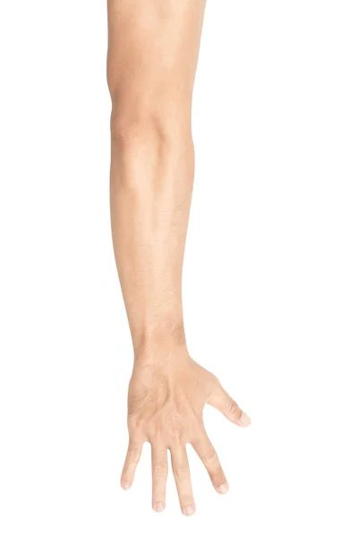
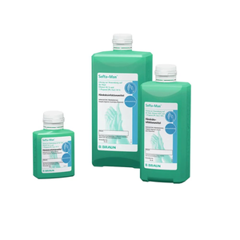
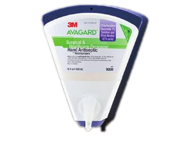

안녕하십니까? 수술부위 감염 예방을 위해 본원에서는 근거 기반 중재활동의 모음인 번들 형태의 중재활동을 진행하고 있습니다. 선생님의 술기를 자가평가해보고 강화 포인트를 확인해 볼 수 있는 페이지로, 아래 핵심 전략을 먼저 확인하신 후 자가평가를 시작해 주세요.
평가 범위 — 여러가지 번들 항목 중 직접 술기를 시행하게 되는 외과적 손소독, 수술 후 드레싱 관리에 대한 항목을 점검합니다. 솔직하게 응답해주실수록 실질적인 피드백을 받으실 수 있습니다. 시간은 약 5분 정도 소요 예상됩니다.
가이드라인 권고사항 기반 SSI 예방 핵심 전략
수술 전 (Preoperative)
🌡️
체온 유지
수술 전·후 정상 체온을 유지한다. (의도적 저체온 유발 제외)
🍬
혈당 조절
수술 전후 고혈당상태(>200mg/dL)가 되지 않도록 관리한다.
🚭
금연
계획된 수술은 30일 전 또는 수술 결정 시점부터 금연하도록 교육한다.
🛁
제균요법 (정형외과 일부 및 심장 수술 전체)
수술 전 일반비누 혹은 항균비누를 이용하여 샤워한다. 고위험 환자는 클로르헥시딘 전신 샤워 및 S. aureus 제균을 시행한다.
✂️
제모
제모가 필요한 경우 일회용 클리퍼나 제모 크림을 이용한다.
💊
예방적 항생제 적정 투여
피부 절개 1시간 이내에 투여한다. (Vancomycin, Quinolone 계열은 2시간 이내 투여)
수술 중 (Intraoperative)
🩺
피부 소독
수술부위 피부 소독을 위해 Chlorhexidine-alcohol(헥시알액 2%)을 사용한다. 헥시알을 사용할 수 없는 경우 Povidone iodine을 사용한다. ⏱️ 건조 — 소독제를 예상 절개 부위보다 광범위하게 도포 후 충분히 건조시킨다. (헥시알: 30초 이상, 베타딘: 2분 이상)
💊
예방적 항생제 적시 투여
예방적 항생제는 피부 절개 전 1시간 이내에 투여한다.
🧤
외과적 손소독
수술에 참여하는 의료진은 수술 전 적절한 방법과 제재로 외과적 손소독을 시행한다.
🫁
산소 공급
전신마취하 기관삽관 상태에서 수술 받은 성인 환자는 수술 중 충분한 산소를 공급한다.
수술 후 (Postoperative)
🩹
안전한 드레싱 유지
수술부위 드레싱 시 무균술기를 준수한다. 소독제 건조시간 준수 필요 (헥시알: 30초 이상, 베타딘: 2분 이상)
시작 전 확인
참여자 정보를 입력해 주세요
입력하신 정보는 술기 자가평가 목적으로만 사용되며, 외부 공개 및 인사 자료로 활용되지 않습니다.
1사번
* 개인 피드백 연계에 사용됩니다
2소속 과
외과의 경우 작성일 기준 세부 분과 소속을 입력해 주세요
3직급
개인정보 안내 — 사번은 개인 피드백 연계에만 사용되며, 설문 결과는 익명 처리된 통계로만 사용됩니다.
스크럽 방법 점검
스크럽, 어떻게 하고 계십니까?
현재 본인의 방법을 그대로 체크해 주세요.
1스크럽 평균 소요 시간
소독제로 문지르는 시간만 (물로 헹구는 시간 제외)
분
2시간 측정 도구를 사용하시나요?
3시간 측정 도구를 사용하지 않는 이유가 무엇인가요?
4스크럽 시행 범위 (해당 범위에 모두 체크)

팔꿈치 위 5cm
팔꿈치
전완 상부
전완 하부
손목
손바닥·손등
손가락 사이·끝
알코올럽 방법 점검
알코올럽, 어떻게 하고 계십니까?
현재 본인의 방법을 그대로 선택해 주세요.


1알코올럽 사용 전 물로 반드시 씻어내고 사용해야 되는 시점이라고 생각되는 항목을 모두 골라주세요